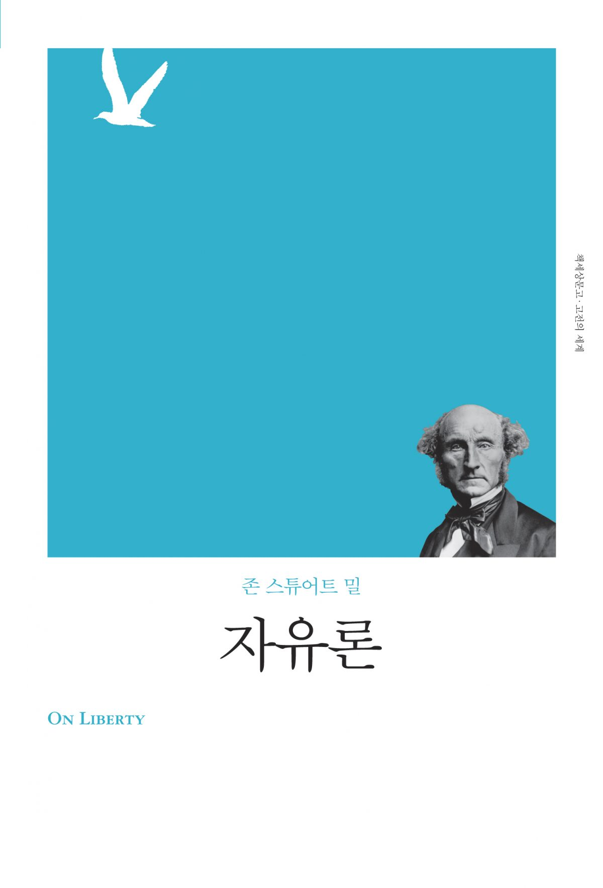

NGP > Book Review > On Liberty
|  |
이 책은 자유에 대해, 그리고 국가에 대해 다시금 생각해 볼 수 있게 해준다. 개인의 자유와 다수의 이익은 항상 반대되는 개념으로 인식되어 있다. 또, 이 책은 개인과 다수 혹은 국가와의 이익이 충돌했을 때의 경우에 대해서도 잘 설명하고 있다.
이 책을 통해 내가 살아갈 세상, 그리고 나의 아이들이 앞으로 살아가야 할 세상을 볼 눈을 기를 수 있다. 다수의 이익이나 폭력에 의해 개인의 자유와 삶이 구속되는 그런 일이 발생하였을 때, 아무것도 모른 체 지나가는 것이 아니라, 그것에 대해 항의하고, 고칠 수 있는 사람이 될 줄 알아야 할 것이다. 모두가 다 이것을 알 필요는 없다. 하지만, 부당한 일을 당했을 때. 그것에 대해 항의하고 행동할 사람이 필요하다. 모르는 것보다 알고 있는 한사람의 힘이 중요하다. 더 나은 사회를 위해, 더 나은 삶을 위해, 그리고 자신을 위해 이 책을 한번쯤 읽어보는 것을 추천한다. |